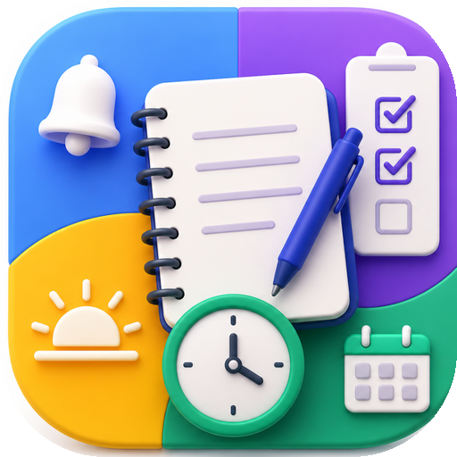

Todo tu año escolar en un solo lugar.
EDUAPP reúne tus materias, actividades, notas y metas en tu celular. Calcula tus promedios por ti y te avisa antes de cada entrega. No necesita Internet ni una cuenta.
Descargar para Android Cómo instalarlaVersión 1.0 · Android 8.0 o superior · Gratis

El problema
Muchos estudiantes llevan las fechas de entrega en la cabeza, las notas en cuadernos y los promedios en la calculadora. Es fácil olvidar una tarea o no saber cuánto falta para aprobar una materia.
La solución
EDUAPP concentra esa información en una app sencilla. Registras tus actividades con su porcentaje y su nota, y la app calcula el promedio de cada materia y el general.
Qué puedes hacer
Las funciones de la versión 1.0, pensadas para el día a día de un estudiante.
- Materias y actividadesCrea materias y agrega actividades con fecha límite, porcentaje y estado.
- Calificaciones y promediosNotas de 0.0 a 5.0. El promedio ponderado se actualiza al instante y una actividad sin nota no cuenta como cero.
- CalendarioConsulta tus entregas por día en una vista mensual y abre la actividad desde ahí.
- RecordatoriosRecibe una notificación antes de que venza una actividad. Tú eliges con cuánta antelación.
- Metas por partesDivide una meta en partes que suman 100 % y marca tu avance.
- Estadísticas y PomodoroMira tu rendimiento y estudia con un temporizador de estudio y descanso.
Cómo instalarla
EDUAPP se distribuye como archivo APK. Toma un par de minutos.
- Descarga el archivo EDUAPP.apk desde el botón «Descargar para Android».
- Ábrelo desde la carpeta Descargas de tu celular.
- Si Android lo pide, permite instalar apps desde esa fuente (por ejemplo, tu navegador).
- Si aparece un aviso de Play Protect, elige «Instalar de todos modos». Sale porque la app no se distribuye por Google Play.
- Abre EDUAPP y acepta el permiso de notificaciones para recibir los recordatorios.
Tus datos se quedan en tu celular
- Sin cuentas, sin inicio de sesión y sin servidores.
- Funciona completamente sin conexión a Internet.
- La información se guarda solo en el almacenamiento interno de la app.